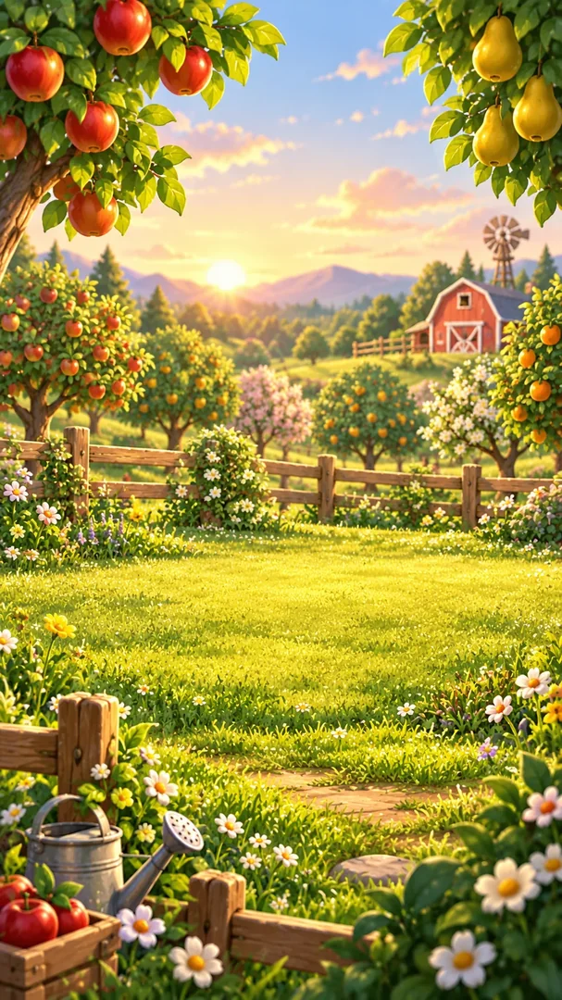
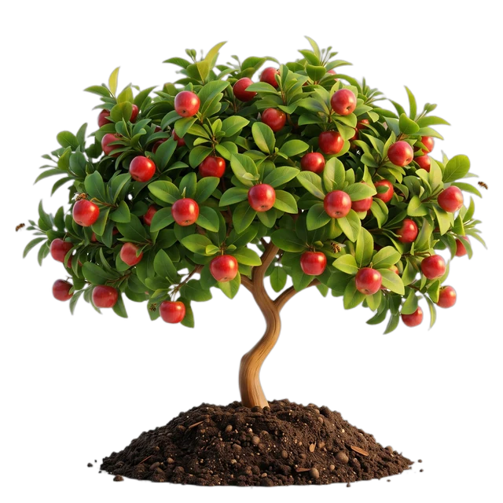

Biraz odak.
Bolca hayat!
Planladığın her ders, tamamladığın her oturum, sana ait bir çiftlikte yeni bir başlangıca dönüşsün. Çalışmak hiç bu kadar renkli görünmemişti.

Sen geldin 🧡
YENİ BİR FİLİZ
Gününü sen yaz.
Can Suyu renklendirsin.
Planını oluştur, odaklanmaya başla, ne kadar yol aldığını gör. Aşağıdaki kartlara dokunup içini keşfet.
Şimdi sadece
bu ana bak.
20 saniyelik kısa bir tanıtım sayacı. Uygulamadaki gerçek Pomodoro oturumlarının yerini almaz.
Her dakika
bir iz bırakır.
Çalıştığın süreyi, tamamlanan etkinliklerini ve çiftliğinin nasıl büyüdüğünü tek yerde izle.
Çalıştıkça
filizlenen
bir dünya.
Kazandığın puanlarla ağaçlar yetiştir, hayvanlarla tanış ve her seferinde dönmek isteyeceğin bir yer kur.

çiftliğim ✿
Odağını topla.
Biraz da oyna.
Can Suyu'nda mola da planın bir parçası. Mini oyunları tanımak için aşağıdaki hafıza denemesini oyna; gerçek oyunlar Android uygulamasında.
Kartları çevirip üç çifti eşleştir!
Birlikte
büyütelim.
Fikrini, sorunu veya Can Suyu için düşündüğün bir şeyi paylaş. E-posta gönderebilir ya da Instagram'dan yazabilirsin.
Merak edilenler ✳
Can Suyu nerede kullanılacak? +
Can Suyu Android uygulaması olarak hazırlanıyor. Bu site uygulamayı tanıtır.
Şimdi indirilebilir mi? +
Henüz Google Play'de yayımlanmadı. Yayımlanınca indirme bağlantısı burada görünecek.
Web sitesinde hesap açabilir miyim? +
Bu tanıtım sitesinde hesap ve kayıt tutulmaz. Çalışma planı, çiftlik ve gerçek mini oyunlar Android uygulamasındadır.
Can Suyu
Çalıştıkça Yeşer!
Can Suyu yakında Google Play'de. Mağaza sayfası henüz yayımlanmadığı için burada sahte bir indirme düğmesi yok. Yayınlandığında doğrudan uygulamaya giden bağlantı gelecek.